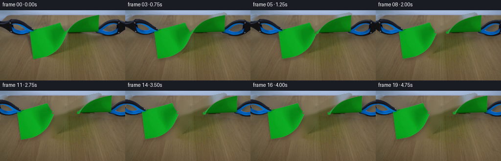
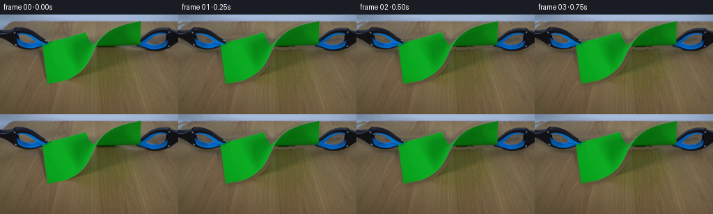
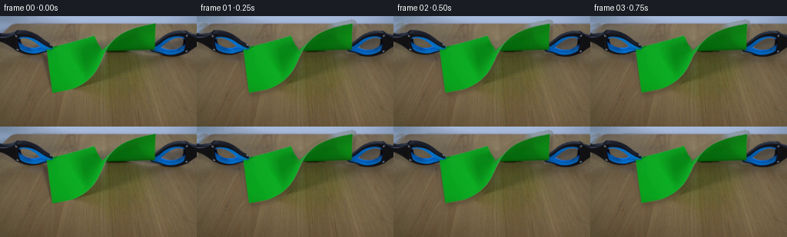
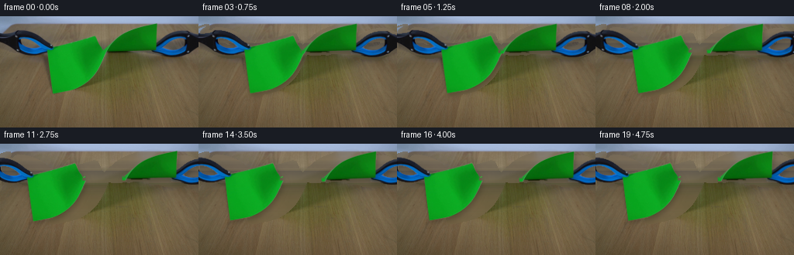

CODING AGENTS AS PIXEL WORLD MODELS
traex/GPT-5.6-Sol · 0044
点击播放 · 原生 RGB 像素
逐轮保存的候选
回放视频、检查图与代码变化。
每份候选均可单独播放。实际图片检查记录在下方工具轨迹中。
候选 01播放与检查图
点击播放 · 原生 RGB 像素

展开代码变化
--- 上一保存版本 +++ 本次保存版本 @@ -0,0 +1,193 @@ +from pathlib import Path +import cv2 +import numpy as np +import artifact_io + +ROOT = Path(__file__).resolve().parent +H, W = 144, 256 +N = 20 + + +def largest_component(mask): + n, lab, stats, _ = cv2.connectedComponentsWithStats((mask > 0).astype(np.uint8), 8) + if n <= 1: + return np.zeros_like(mask, np.uint8) + k = 1 + np.argmax(stats[1:, cv2.CC_STAT_AREA]) + return (lab == k).astype(np.uint8) * 255 + + +def alpha_from_binary(mask, blur=0.75): + a = mask.astype(np.float32) + if blur: + a = cv2.GaussianBlur(a, (0, 0), blur) + return np.clip(a, 0, 255).astype(np.uint8) + + +def warp_layer(rgb, alpha, M): + wrgb = cv2.warpAffine(rgb, M, (W, H), flags=cv2.INTER_CUBIC, + borderMode=cv2.BORDER_CONSTANT, borderValue=(0, 0, 0)) + wa = cv2.warpAffine(alpha, M, (W, H), flags=cv2.INTER_CUBIC, + borderMode=cv2.BORDER_CONSTANT, borderValue=0) + return wrgb, wa + + +def over(dst, src, alpha): + a = alpha.astype(np.float32)[..., None] / 255.0 + return np.clip(src.astype(np.float32) * a + dst.astype(np.float32) * (1.0-a), 0, 255).astype(np.uint8) + + +def affine_about(cx, cy, sx=1.0, sy=1.0, degrees=0.0, dx=0.0, dy=0.0): + th = np.deg2rad(degrees) + c, s = np.cos(th), np.sin(th) + A = np.array([[c*sx, -s*sy], [s*sx, c*sy]], np.float32) + t = np.array([cx+dx, cy+dy], np.float32) - A @ np.array([cx, cy], np.float32) + return np.array([[A[0,0], A[0,1], t[0]], [A[1,0], A[1,1], t[1]]], np.float32) + + +def ease(x): + x = np.clip(x, 0.0, 1.0) + return x*x*(3.0-2.0*x) + + +def make_clean_plate(src, removal): + # OpenCV inpainting gives continuous, locally matched wood grain around the setup. + m = cv2.dilate(removal, cv2.getStructuringElement(cv2.MORPH_ELLIPSE, (11,11))) + plate = cv2.inpaint(src, m, 7, cv2.INPAINT_TELEA) + # Large masked areas benefit from a faint column-wise grain reconstructed from clear table below. + yy = np.arange(H, dtype=np.float32) + synth = plate.astype(np.float32) + for x in range(W): + clear = (m[:,x] == 0) & (yy >= 10) + inds = np.where(clear)[0] + if len(inds) >= 5: + for ch in range(3): + vals = src[inds,x,ch].astype(np.float32) + # linear illumination trend; retain a subtle grain residual from clear samples + p = np.polyfit(inds, vals, 1) + trend = p[0]*yy+p[1] + residual = vals - (p[0]*inds+p[1]) + texture = np.interp(yy, inds, residual) + pred = trend + 0.35*texture + use = m[:,x] > 0 + synth[use,x,ch] = 0.72*synth[use,x,ch] + 0.28*pred[use] + return np.clip(synth,0,255).astype(np.uint8) + + +def main(): + src = cv2.cvtColor(cv2.imread(str(ROOT/'first_frame.png'), cv2.IMREAD_COLOR), cv2.COLOR_BGR2RGB) + hsv = cv2.cvtColor(src, cv2.COLOR_RGB2HSV) + Y, X = np.mgrid[0:H, 0:W] + + # Saturated green paper, retained as one clean connected component. + green = cv2.inRange(hsv, np.array([36, 58, 28]), np.array([92, 255, 255])) + green = largest_component(cv2.morphologyEx(green, cv2.MORPH_CLOSE, np.ones((3,3),np.uint8))) + green = cv2.morphologyEx(green, cv2.MORPH_CLOSE, np.ones((3,3),np.uint8)) + + # The visible sheet crosses itself at the taut middle. Its upper curved blade is the + # right half; the broad hanging blade is the left half. + boundary = 132.0 + 61.0*np.exp(-(Y-8.0)/12.5) + right_bin = ((green>0) & (Y<=46) & (X>=boundary-1.5)).astype(np.uint8)*255 + # Include the small pointed lower rim which converges on the tear origin. + right_bin |= ((green>0) & (Y>=40) & (Y<=47) & (X>=132) & (X<=202)).astype(np.uint8)*255 + left_bin = ((green>0) & (right_bin==0)).astype(np.uint8)*255 + # A few center pixels are assigned according to the physical halves, producing an irregular edge. + left_bin[(Y==43)&(X>=132)&(X<=135)] = 255 + right_bin[(Y==43)&(X>=132)&(X<=135)] = 0 + + left_a = alpha_from_binary(left_bin, .62) + right_a = alpha_from_binary(right_bin, .62) + + # Tool silhouettes: vivid blue grips plus their nearly black frames, constrained to hand-shaped ROIs. + blue = cv2.inRange(hsv, np.array([92,70,18]), np.array([139,255,255])) + dark = ((hsv[...,2] < 73) & (Y>12)).astype(np.uint8)*255 + lroi = np.zeros((H,W),np.uint8) + rroi = np.zeros((H,W),np.uint8) + cv2.fillPoly(lroi,[np.array([[0,17],[18,10],[38,13],[68,35],[70,47],[53,53],[24,52],[13,43],[0,40]],np.int32)],255) + cv2.fillPoly(rroi,[np.array([[190,30],[207,17],[230,15],[256,21],[256,43],[240,53],[213,52],[196,45]],np.int32)],255) + toolcand = cv2.bitwise_or(blue,dark) + # Closing connects glossy black frame pixels around the blue openings without filling those openings. + toolcand = cv2.morphologyEx(toolcand,cv2.MORPH_CLOSE,cv2.getStructuringElement(cv2.MORPH_ELLIPSE,(3,3))) + left_tool = cv2.bitwise_and(toolcand,lroi) + right_tool = cv2.bitwise_and(toolcand,rroi) + # Add dark jaw tips touching the paper. + left_tool[((X>=56)&(X<=69)&(Y>=34)&(Y<=48)&(hsv[...,2]<105))] = 255 + right_tool[((X>=194)&(X<=207)&(Y>=34)&(Y<=48)&(hsv[...,2]<105))] = 255 + left_tool = cv2.morphologyEx(left_tool,cv2.MORPH_CLOSE,np.ones((3,3),np.uint8)) + right_tool = cv2.morphologyEx(right_tool,cv2.MORPH_CLOSE,np.ones((3,3),np.uint8)) + left_tool_a = alpha_from_binary(left_tool,.48) + right_tool_a = alpha_from_binary(right_tool,.48) + + removal = cv2.bitwise_or(green, cv2.bitwise_or(left_tool,right_tool)) + plate = make_clean_plate(src, removal) + + # Keep source pixels in each RGBA layer. Anti-aliased alpha preserves the original photographic texture. + paper_rgb = src.copy() + tool_rgb = src.copy() + frames = [src.copy()] # contractual exact first frame + + for i in range(1,N): + t = i/(N-1) + tension = ease(min(t/0.28,1.0)) + rip = ease((t-0.22)/0.43) + settle = ease((t-0.62)/0.38) + + # Tools first load the sheet by ~3 px, then snap farther apart as fibers fail. + pull = 3.0*tension + 23.0*rip + recoil = np.sin(np.pi*np.clip((t-.45)/.35,0,1)) * 1.7 + ldx, rdx = -pull-recoil, pull+recoil + ldy = -0.45*tension + 0.5*np.sin(i*.7)*rip*(1-settle) + rdy = 0.25*tension - 0.35*np.sin(i*.64)*rip*(1-settle) + + # Before failure, stretch about the center. After failure, the free torn ends flutter slightly. + sx = 1.0 + .035*tension*(1-rip) + flutter = np.sin((t-.3)*9.0)*2.1*rip*(1-.72*settle) + ML = affine_about(65,42,sx=sx,degrees=-0.45*flutter,dx=ldx,dy=ldy+0.28*flutter) + MR = affine_about(201,42,sx=sx,degrees=0.36*flutter,dx=rdx,dy=rdy-0.18*flutter) + MTL = affine_about(65,42,dx=ldx,dy=ldy) + MTR = affine_about(201,42,dx=rdx,dy=rdy) + + lr, la = warp_layer(paper_rgb,left_a,ML) + rr, ra = warp_layer(paper_rgb,right_a,MR) + tl, tla = warp_layer(tool_rgb,left_tool_a,MTL) + tr, tra = warp_layer(tool_rgb,right_tool_a,MTR) + + frame = plate.copy() + # Soft moving contact shadows give the lifted paper and tools depth. + all_a = np.maximum.reduce([la,ra,tla,tra]) + sh = cv2.GaussianBlur(all_a,(0,0),3.0) + sh = cv2.warpAffine(sh,np.float32([[1,0,2.0],[0,1,4.0]]),(W,H),borderValue=0) + shade = (0.19*(sh.astype(np.float32)/255.0))[...,None] + frame = np.clip(frame.astype(np.float32)*(1-shade),0,255).astype(np.uint8) + + frame = over(frame,lr,la) + frame = over(frame,rr,ra) + # Black jaws lie over the green corners. + frame = over(frame,tl,tla) + frame = over(frame,tr,tra) + + # Fibrous, asymmetric rupture details emerge only while the halves are separating. + if rip > .04: + # Transform the common tear origin into each half's coordinates. + def pt(M,p): + q=M@np.array([p[0],p[1],1.0],np.float32); return tuple(np.round(q).astype(int)) + pl=pt(ML,(133,43)); pr=pt(MR,(133,43)) + gap=max(0,pr[0]-pl[0]) + # pale green fibers attached to either torn edge, progressively snapping + col=(68,171,62) + if gap<22: + cv2.line(frame,pl,(min(pl[0]+max(1,gap//3),pr[0]-1),pl[1]-1),col,1,cv2.LINE_AA) + if gap<15: + cv2.line(frame,(pl[0],pl[1]+1),(max(pl[0]+1,pr[0]-2),pr[1]+1),(42,130,42),1,cv2.LINE_AA) + # short irregular paper hairs remain after the main bridge breaks + cv2.line(frame,pl,(pl[0]+2,pl[1]-1),col,1,cv2.LINE_AA) + cv2.line(frame,pr,(pr[0]-2,pr[1]+1),(45,145,48),1,cv2.LINE_AA) + + frames.append(frame) + + frames=np.stack(frames).astype(np.uint8) + assert np.array_equal(frames[0],src) + artifact_io.save(frames,ROOT) + + +if __name__=='__main__': + main()
候选 02播放与检查图
点击播放 · 原生 RGB 像素


展开代码变化
--- 上一保存版本 +++ 本次保存版本 @@ -50,27 +50,38 @@ def make_clean_plate(src, removal): - # OpenCV inpainting gives continuous, locally matched wood grain around the setup. - m = cv2.dilate(removal, cv2.getStructuringElement(cv2.MORPH_ELLIPSE, (11,11))) - plate = cv2.inpaint(src, m, 7, cv2.INPAINT_TELEA) - # Large masked areas benefit from a faint column-wise grain reconstructed from clear table below. - yy = np.arange(H, dtype=np.float32) - synth = plate.astype(np.float32) - for x in range(W): - clear = (m[:,x] == 0) & (yy >= 10) - inds = np.where(clear)[0] - if len(inds) >= 5: - for ch in range(3): - vals = src[inds,x,ch].astype(np.float32) - # linear illumination trend; retain a subtle grain residual from clear samples - p = np.polyfit(inds, vals, 1) - trend = p[0]*yy+p[1] - residual = vals - (p[0]*inds+p[1]) - texture = np.interp(yy, inds, residual) - pred = trend + 0.35*texture - use = m[:,x] > 0 - synth[use,x,ch] = 0.72*synth[use,x,ch] + 0.28*pred[use] - return np.clip(synth,0,255).astype(np.uint8) + # Fill from nearby exposed tabletop. A narrow inpaint pass blends the silhouette; + # an explicit row-wise table estimate prevents green/black colour bleeding through + # the large paper footprint. + m = cv2.dilate(removal, cv2.getStructuringElement(cv2.MORPH_ELLIPSE, (9,9))) + inp = cv2.inpaint(src, m, 5, cv2.INPAINT_TELEA).astype(np.float32) + synth = src.astype(np.float32).copy() + rng = np.random.default_rng(4401) + # Robust reference colour at each table depth, interpolated through occluded rows. + rowcol = np.full((H,3), np.nan, np.float32) + for y in range(H): + ok = (m[y] == 0) + vals = src[y,ok] + if len(vals) >= 18: + rowcol[y] = np.median(vals,axis=0) + known=np.where(np.isfinite(rowcol[:,0]))[0] + for ch in range(3): + rowcol[:,ch]=np.interp(np.arange(H),known,rowcol[known,ch]) + # Preserve column variation, but derive it only from the unobstructed lower table. + low = src[104:144].astype(np.float32) + lowbase = np.median(low,axis=(0,1)) + coloff = np.median(low,axis=0)-lowbase + coloff = cv2.GaussianBlur(coloff.reshape(1,W,3),(0,0),7).reshape(W,3) + noise=cv2.GaussianBlur(rng.normal(0,1.6,(H,W)).astype(np.float32),(0,0),1.1) + for y in range(H): + pred=rowcol[y][None,:] + .42*coloff + # restrained fine wood texture and subtle vertical grain + pred += noise[y,:,None]*np.array([1.0,.8,.55],np.float32) + use=m[y]>0 + synth[y,use]=.16*inp[y,use]+.84*pred[use] + # soften only the synthesized boundary, leaving real table pixels untouched + synth=np.clip(synth,0,255).astype(np.uint8) + return synth def main():
可观测工具轨迹
实际执行的命令与返回图片。
命令 1exit 0
/bin/bash -lc "cat GENERATION_RULES.md && printf '\\n---PROMPT---\\n' && cat prompt.txt"
命令 2exit 0
/bin/bash -lc "find . -maxdepth 2 -type f -printf '%p %s bytes\\n' | sort"
命令 3exit 0
/bin/bash -lc "python3 - <<'PY'
from PIL import Image
im=Image.open('first_frame.png')
print(im.size, im.mode)
PY
command -v ffmpeg || true
command -v blender || true
python3 - <<'PY'
mods=['cv2','numpy','PIL','imageio']
for m in mods:
try:
x=__import__(m); print(m,'OK',getattr(x,'__version__',''))
except Exception as e: print(m,'NO',e)
PY"命令 4exit 0
/bin/bash -lc "python3 - <<'PY'
import cv2, numpy as np
im=cv2.imread('first_frame.png')
hsv=cv2.cvtColor(im,cv2.COLOR_BGR2HSV)
# green ranges
m=cv2.inRange(hsv,np.array([35,70,35]),np.array([90,255,255]))
n,lab,st,cen=cv2.connectedComponentsWithStats(m)
print('green comps')
for x,y,w,h,a in st[1:]:
if a>10: print(x,y,w,h,a)
# blue
b=cv2.inRange(hsv,np.array([90,80,20]),np.array([135,255,255]))
n,lab,st,cen=cv2.connectedComponentsWithStats(b)
print('blue comps')
for x,y,w,h,a in st[1:]:
if a>5: print(x,y,w,h,a)
PY"命令 5exit 0
/bin/bash -lc 'cat artifact_io.py'
命令 6exit 0
/bin/bash -lc "python3 - <<'PY'
import cv2,numpy as np
im=cv2.imread('first_frame.png')
hsv=cv2.cvtColor(im,cv2.COLOR_BGR2HSV)
g=cv2.inRange(hsv,np.array([30,55,30]),np.array([95,255,255]))
g=cv2.morphologyEx(g,cv2.MORPH_CLOSE,np.ones((3,3),np.uint8))
cv2.imwrite('.tmp/green_mask.png',g)
cv2.imwrite('.tmp/enlarged.png',cv2.resize(im,None,fx=4,fy=4,interpolation=cv2.INTER_NEAREST))
PY"命令 7exit 0
/bin/bash -lc "python3 - <<'PY'
import cv2,numpy as np
im=cv2.imread('first_frame.png'); h=cv2.cvtColor(im,cv2.COLOR_BGR2HSV); m=cv2.inRange(h,np.array([35,70,35]),np.array([90,255,255]))>0
for y in range(5,105,3):
xs=np.where(m[y])[0]
if len(xs):
# runs
cuts=np.r_[0,np.where(np.diff(xs)>1)[0]+1,len(xs)]
print(y,[(int(xs[a]),int(xs[b-1])) for a,b in zip(cuts[:-1],cuts[1:]) if b-a>1])
PY"命令 8exit 0
/bin/bash -lc "cat > generate.py <<'PY'
from pathlib import Path
import cv2
import numpy as np
import artifact_io
ROOT = Path(__file__).resolve().parent
H, W = 144, 256
N = 20
def largest_component(mask):
n, lab, stats, _ = cv2.connectedComponentsWithStats((mask > 0).astype(np.uint8), 8)
if n <= 1:
return np.zeros_like(mask, np.uint8)
k = 1 + np.argmax(stats[1:, cv2.CC_STAT_AREA])
return (lab == k).astype(np.uint8) * 255
def alpha_from_binary(mask, blur=0.75):
a = mask.astype(np.float32)
if blur:
a = cv2.GaussianBlur(a, (0, 0), blur)
return np.clip(a, 0, 255).astype(np.uint8)
def warp_layer(rgb, alpha, M):
wrgb = cv2.warpAffine(rgb, M, (W, H), flags=cv2.INTER_CUBIC,
borderMode=cv2.BORDER_CONSTANT, borderValue=(0, 0, 0))
wa = cv2.warpAffine(alpha, M, (W, H), flags=cv2.INTER_CUBIC,
borderMode=cv2.BORDER_CONSTANT, borderValue=0)
return wrgb, wa
def over(dst, src, alpha):
a = alpha.astype(np.float32)[..., None] / 255.0
return np.clip(src.astype(np.float32) * a + dst.astype(np.float32) * (1.0-a), 0, 255).astype(np.uint8)
def affine_about(cx, cy, sx=1.0, sy=1.0, degrees=0.0, dx=0.0, dy=0.0):
th = np.deg2rad(degrees)
c, s = np.cos(th), np.sin(th)
A = np.array([[c*sx, -s*sy], [s*sx, c*sy]], np.float32)
t = np.array([cx+dx, cy+dy], np.float32) - A @ np.array([cx, cy], np.float32)
return np.array([[A[0,0], A[0,1], t[0]], [A[1,0], A[1,1], t[1]]], np.float32)
def ease(x):
x = np.clip(x, 0.0, 1.0)
return x*x*(3.0-2.0*x)
def make_clean_plate(src, removal):
# OpenCV inpainting gives continuous, locally matched wood grain around the setup.
m = cv2.dilate(removal, cv2.getStructuringElement(cv2.MORPH_ELLIPSE, (11,11)))
plate = cv2.inpaint(src, m, 7, cv2.INPAINT_TELEA)
# Large masked areas benefit from a faint column-wise grain reconstructed from clear table below.
yy = np.arange(H, dtype=np.float32)
synth = plate.astype(np.float32)
for x in range(W):
clear = (m[:,x] == 0) & (yy >= 10)
inds = np.where(clear)[0]
if len(inds) >= 5:
for ch in range(3):
vals = src[inds,x,ch].astype(np.float32)
# linear illumination trend; retain a subtle grain residual from clear samples
p = np.polyfit(inds, vals, 1)
trend = p[0]*yy+p[1]
residual = vals - (p[0]*inds+p[1])
texture = np.interp(yy, inds, residual)
pred = trend + 0.35*texture
use = m[:,x] > 0
synth[use,x,ch] = 0.72*synth[use,x,ch] + 0.28*pred[use]
return np.clip(synth,0,255).astype(np.uint8)
def main():
src = cv2.cvtColor(cv2.imread(str(ROOT/'first_frame.png'), cv2.IMREAD_COLOR), cv2.COLOR_BGR2RGB)
hsv = cv2.cvtColor(src, cv2.COLOR_RGB2HSV)
Y, X = np.mgrid[0:H, 0:W]
# Saturated green paper, retained as one clean connected component.
green = cv2.inRange(hsv, np.array([36, 58, 28]), np.array([92, 255, 255]))
green = largest_component(cv2.morphologyEx(green, cv2.MORPH_CLOSE, np.ones((3,3),np.uint8)))
green = cv2.morphologyEx(green, cv2.MORPH_CLOSE, np.ones((3,3),np.uint8))
# The visible sheet crosses itself at the taut middle. Its upper curved blade is the
# right half; the broad hanging blade is the left half.
boundary = 132.0 + 61.0*np.exp(-(Y-8.0)/12.5)
right_bin = ((green>0) & (Y<=46) & (X>=boundary-1.5)).astype(np.uint8)*255
# Include the small pointed lower rim which converges on the tear origin.
right_bin |= ((green>0) & (Y>=40) & (Y<=47) & (X>=132) & (X<=202)).astype(np.uint8)*255
left_bin = ((green>0) & (right_bin==0)).astype(np.uint8)*255
# A few center pixels are assigned according to the physical halves, producing an irregular edge.
left_bin[(Y==43)&(X>=132)&(X<=135)] = 255
right_bin[(Y==43)&(X>=132)&(X<=135)] = 0
left_a = alpha_from_binary(left_bin, .62)
right_a = alpha_from_binary(right_bin, .62)
# Tool silhouettes: vivid blue grips plus their nearly black frames, constrained to hand-shaped ROIs.
blue = cv2.inRange(hsv, np.array([92,70,18]), np.array([139,255,255]))
dark = ((hsv[...,2] < 73) & (Y>12)).astype(np.uint8)*255
lroi = np.zeros((H,W),np.uint8)
rroi = np.zeros((H,W),np.uint8)
cv2.fillPoly(lroi,[np.array([[0,17],[18,10],[38,13],[68,35],[70,47],[53,53],[24,52],[13,43],[0,40]],np.int32)],255)
cv2.fillPoly(rroi,[np.array([[190,30],[207,17],[230,15],[256,21],[256,43],[240,53],[213,52],[196,45]],np.int32)],255)
toolcand = cv2.bitwise_or(blue,dark)
# Closing connects glossy black frame pixels around the blue openings without filling those openings.
toolcand = cv2.morphologyEx(toolcand,cv2.MORPH_CLOSE,cv2.getStructuringElement(cv2.MORPH_ELLIPSE,(3,3)))
left_tool = cv2.bitwise_and(toolcand,lroi)
right_tool = cv2.bitwise_and(toolcand,rroi)
# Add dark jaw tips touching the paper.
left_tool[((X>=56)&(X<=69)&(Y>=34)&(Y<=48)&(hsv[...,2]<105))] = 255
right_tool[((X>=194)&(X<=207)&(Y>=34)&(Y<=48)&(hsv[...,2]<105))] = 255
left_tool = cv2.morphologyEx(left_tool,cv2.MORPH_CLOSE,np.ones((3,3),np.uint8))
right_tool = cv2.morphologyEx(right_tool,cv2.MORPH_CLOSE,np.ones((3,3),np.uint8))
left_tool_a = alpha_from_binary(left_tool,.48)
right_tool_a = alpha_from_binary(right_tool,.48)
removal = cv2.bitwise_or(green, cv2.bitwise_or(left_tool,right_tool))
plate = make_clean_plate(src, removal)
# Keep source pixels in each RGBA layer. Anti-aliased alpha preserves the original photographic texture.
paper_rgb = src.copy()
tool_rgb = src.copy()
frames = [src.copy()] # contractual exact first frame
for i in range(1,N):
t = i/(N-1)
tension = ease(min(t/0.28,1.0))
rip = ease((t-0.22)/0.43)
settle = ease((t-0.62)/0.38)
# Tools first load the sheet by ~3 px, then snap farther apart as fibers fail.
pull = 3.0*tension + 23.0*rip
recoil = np.sin(np.pi*np.clip((t-.45)/.35,0,1)) * 1.7
ldx, rdx = -pull-recoil, pull+recoil
ldy = -0.45*tension + 0.5*np.sin(i*.7)*rip*(1-settle)
rdy = 0.25*tension - 0.35*np.sin(i*.64)*rip*(1-settle)
# Before failure, stretch about the center. After failure, the free torn ends flutter slightly.
sx = 1.0 + .035*tension*(1-rip)
flutter = np.sin((t-.3)*9.0)*2.1*rip*(1-.72*settle)
ML = affine_about(65,42,sx=sx,degrees=-0.45*flutter,dx=ldx,dy=ldy+0.28*flutter)
MR = affine_about(201,42,sx=sx,degrees=0.36*flutter,dx=rdx,dy=rdy-0.18*flutter)
MTL = affine_about(65,42,dx=ldx,dy=ldy)
MTR = affine_about(201,42,dx=rdx,dy=rdy)
lr, la = warp_layer(paper_rgb,left_a,ML)
rr, ra = warp_layer(paper_rgb,right_a,MR)
tl, tla = warp_layer(tool_rgb,left_tool_a,MTL)
tr, tra = warp_layer(tool_rgb,right_tool_a,MTR)
frame = plate.copy()
# Soft moving contact shadows give the lifted paper and tools depth.
all_a = np.maximum.reduce([la,ra,tla,tra])
sh = cv2.GaussianBlur(all_a,(0,0),3.0)
sh = cv2.warpAffine(sh,np.float32([[1,0,2.0],[0,1,4.0]]),(W,H),borderValue=0)
shade = (0.19*(sh.astype(np.float32)/255.0))[...,None]
frame = np.clip(frame.astype(np.float32)*(1-shade),0,255).astype(np.uint8)
frame = over(frame,lr,la)
frame = over(frame,rr,ra)
# Black jaws lie over the green corners.
frame = over(frame,tl,tla)
frame = over(frame,tr,tra)
# Fibrous, asymmetric rupture details emerge only while the halves are separating.
if rip > .04:
# Transform the common tear origin into each half's coordinates.
def pt(M,p):
q=M@np.array([p[0],p[1],1.0],np.float32); return tuple(np.round(q).astype(int))
pl=pt(ML,(133,43)); pr=pt(MR,(133,43))
gap=max(0,pr[0]-pl[0])
# pale green fibers attached to either torn edge, progressively snapping
col=(68,171,62)
if gap<22:
cv2.line(frame,pl,(min(pl[0]+max(1,gap//3),pr[0]-1),pl[1]-1),col,1,cv2.LINE_AA)
if gap<15:
cv2.line(frame,(pl[0],pl[1]+1),(max(pl[0]+1,pr[0]-2),pr[1]+1),(42,130,42),1,cv2.LINE_AA)
# short irregular paper hairs remain after the main bridge breaks
cv2.line(frame,pl,(pl[0]+2,pl[1]-1),col,1,cv2.LINE_AA)
cv2.line(frame,pr,(pr[0]-2,pr[1]+1),(45,145,48),1,cv2.LINE_AA)
frames.append(frame)
frames=np.stack(frames).astype(np.uint8)
assert np.array_equal(frames[0],src)
artifact_io.save(frames,ROOT)
if __name__=='__main__':
main()
PY
python3 generate.py
python3 - <<'PY'
from PIL import Image
im=Image.open('inspection.png'); print(im.size)
PY"命令 9exit 0
/bin/bash -lc "python3 - <<'PY'
from PIL import Image
import numpy as np
im=np.array(Image.open('first_frame.png'))
for y in [10,15,50,75,100,110,120,130,140]:
a=im[y,130:190]
print(y,np.median(a,axis=0),np.mean(a,axis=0))
PY"命令 10exit 0
/bin/bash -lc "python3 - <<'PY'
import cv2,numpy as np
im=cv2.cvtColor(cv2.imread('first_frame.png'),cv2.COLOR_BGR2RGB); hsv=cv2.cvtColor(im,cv2.COLOR_RGB2HSV); Y,X=np.mgrid[:144,:256]
g=cv2.inRange(hsv,np.array([36,58,28]),np.array([92,255,255])); b=cv2.inRange(hsv,np.array([92,70,18]),np.array([139,255,255])); dark=((hsv[:,:,2]<73)&(Y>12)).astype(np.uint8)*255; rem=cv2.dilate(cv2.bitwise_or(g,cv2.bitwise_or(b,dark)),np.ones((9,9),np.uint8))
for y in [5,10,15,20,25,30,35,40,45,50,60,80,100,120,140]:
vals=im[y][rem[y]==0]; print(y, len(vals), np.median(vals,axis=0))
PY"命令 11exit 0
/bin/bash -lc "python3 - <<'PY'
p='generate.py'
s=open(p).read()
start=s.index('def make_clean_plate')
end=s.index('\\n\\ndef main():',start)
new='''def make_clean_plate(src, removal):
# Fill from nearby exposed tabletop. A narrow inpaint pass blends the silhouette;
# an explicit row-wise table estimate prevents green/black colour bleeding through
# the large paper footprint.
m = cv2.dilate(removal, cv2.getStructuringElement(cv2.MORPH_ELLIPSE, (9,9)))
inp = cv2.inpaint(src, m, 5, cv2.INPAINT_TELEA).astype(np.float32)
synth = src.astype(np.float32).copy()
rng = np.random.default_rng(4401)
# Robust reference colour at each table depth, interpolated through occluded rows.
rowcol = np.full((H,3), np.nan, np.float32)
for y in range(H):
ok = (m[y] == 0)
vals = src[y,ok]
if len(vals) >= 18:
rowcol[y] = np.median(vals,axis=0)
known=np.where(np.isfinite(rowcol[:,0]))[0]
for ch in range(3):
rowcol[:,ch]=np.interp(np.arange(H),known,rowcol[known,ch])
# Preserve column variation, but derive it only from the unobstructed lower table.
low = src[104:144].astype(np.float32)
lowbase = np.median(low,axis=(0,1))
coloff = np.median(low,axis=0)-lowbase
coloff = cv2.GaussianBlur(coloff.reshape(1,W,3),(0,0),7).reshape(W,3)
noise=cv2.GaussianBlur(rng.normal(0,1.6,(H,W)).astype(np.float32),(0,0),1.1)
for y in range(H):
pred=rowcol[y][None,:] + .42*coloff
# restrained fine wood texture and subtle vertical grain
pred += noise[y,:,None]*np.array([1.0,.8,.55],np.float32)
use=m[y]>0
synth[y,use]=.16*inp[y,use]+.84*pred[use]
# soften only the synthesized boundary, leaving real table pixels untouched
synth=np.clip(synth,0,255).astype(np.uint8)
return synth
'''
open(p,'w').write(s[:start]+new+s[end:])
PY
python3 generate.py"命令 12exit 0
/bin/bash -lc "python3 - <<'PY'
import numpy as np
from PIL import Image
z=np.load('pixels.npz')['pixels']
assert z.shape==(144,256,20)
f0=np.array(Image.open('frames/00.png'))
s=np.array(Image.open('first_frame.png'))
assert np.array_equal(f0,s)
assert len(list(__import__('pathlib').Path('frames').glob('*.png')))==20
for p in sorted(__import__('pathlib').Path('frames').glob('*.png')):
im=Image.open(p); assert im.mode=='RGB' and im.size==(256,144)
print('validated',z.shape,'frame0_exact',np.array_equal(f0,s),'changed_pixels_final',np.count_nonzero(np.any(np.array(Image.open('frames/19.png'))"'!=s,axis=2)))
PY
ls -lh pixels.npz index.html inspection.png generate.py'视觉工具实际返回图片 1

视觉工具实际返回图片 2

视觉工具实际返回图片 3

视觉工具实际返回图片 4

保存候选 2 份；完成命令 12 次；可验证图片返回 4 张。原始 API 响应与完整日志保留在本地。